Estimate Inverse Weibull Parameters
Source:R/est-param-inv-weibull.R
util_inverse_weibull_param_estimate.RdThe function will return a list output by default, and if the parameter
.auto_gen_empirical is set to TRUE then the empirical data given to the
parameter .x will be run through the tidy_empirical() function and combined
with the estimated inverse Weibull data.
Arguments
- .x
The vector of data to be passed to the function.
- .auto_gen_empirical
This is a boolean value of TRUE/FALSE with default set to TRUE. This will automatically create the
tidy_empirical()output for the.xparameter and use thetidy_combine_distributions(). The user can then plot out the data using$combined_data_tblfrom the function output.
Details
This function will attempt to estimate the inverse Weibull shape and rate parameters given some vector of values.
See also
Other Parameter Estimation:
util_bernoulli_param_estimate(),
util_beta_param_estimate(),
util_binomial_param_estimate(),
util_burr_param_estimate(),
util_cauchy_param_estimate(),
util_chisquare_param_estimate(),
util_exponential_param_estimate(),
util_f_param_estimate(),
util_gamma_param_estimate(),
util_generalized_beta_param_estimate(),
util_generalized_pareto_param_estimate(),
util_geometric_param_estimate(),
util_hypergeometric_param_estimate(),
util_inverse_burr_param_estimate(),
util_inverse_pareto_param_estimate(),
util_logistic_param_estimate(),
util_lognormal_param_estimate(),
util_negative_binomial_param_estimate(),
util_normal_param_estimate(),
util_paralogistic_param_estimate(),
util_pareto1_param_estimate(),
util_pareto_param_estimate(),
util_poisson_param_estimate(),
util_t_param_estimate(),
util_triangular_param_estimate(),
util_uniform_param_estimate(),
util_weibull_param_estimate(),
util_zero_truncated_binomial_param_estimate(),
util_zero_truncated_geometric_param_estimate(),
util_zero_truncated_negative_binomial_param_estimate(),
util_zero_truncated_poisson_param_estimate()
Other Inverse Weibull:
util_inverse_weibull_stats_tbl()
Examples
library(dplyr)
library(ggplot2)
set.seed(123)
x <- tidy_inverse_weibull(100, .shape = 2, .scale = 1)[["y"]]
output <- util_inverse_weibull_param_estimate(x)
output$parameter_tbl
#> # A tibble: 1 × 8
#> dist_type samp_size min max method shape scale rate
#> <chr> <int> <dbl> <dbl> <chr> <dbl> <dbl> <dbl>
#> 1 Inverse Weibull 100 0.372 14.7 MLE 2.11 0.967 1.03
output$combined_data_tbl %>%
tidy_combined_autoplot()
